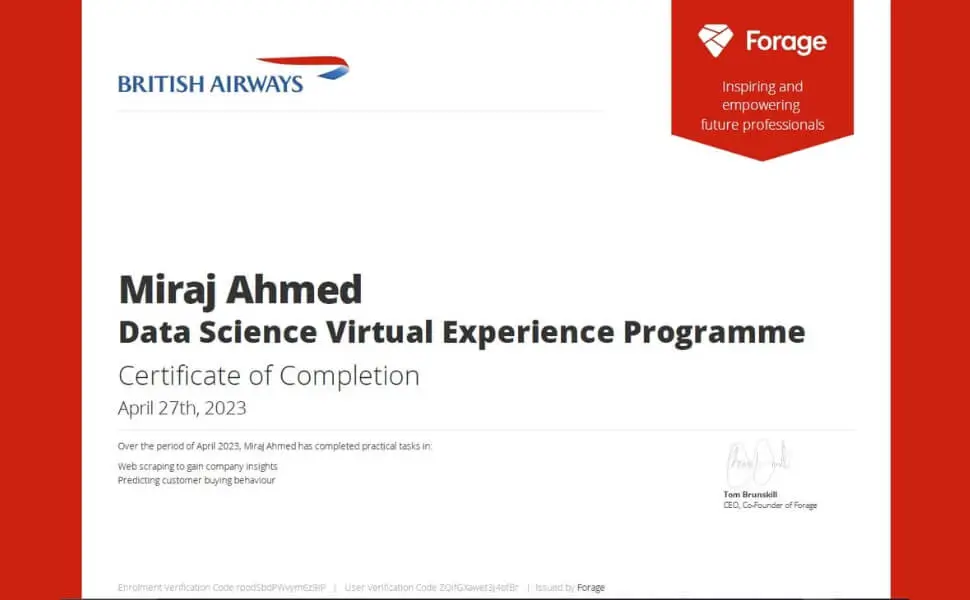

British Airways Virtual Internship
Project Information
- Category: Data Science / NLP
- Client: British Airways (Forage)
- Tech Stack: Python, Scikit-Learn, BeautifulSoup
- Key Tasks: Web Scraping, Sentiment Analysis, Modeling
- Notebook: View on Kaggle
Analyzing Customer Reviews & Predicting Buying Behavior
This project aimed to analyze customer satisfaction and predict customer booking behavior for British Airways. The workflow involved web scraping reviews, performing sentiment analysis, and building a predictive model to identify potential customers.

Interactive Notebook Preview
Task 1: Customer Satisfaction Analysis
Situation & Task
The airline sought to understand customer sentiment using reviews from Skytrax. The goal was to scrape, clean, and analyze this unstructured data.
Action:
- Web Scraping: Collected 3,607 reviews using Python and BeautifulSoup.
- NLP Pipeline: Cleaned text, removed stopwords, and performed Sentiment Analysis.
- Visualization: Created Word Clouds to highlight frequent topics like "Service", "Food", and "Seat Comfort".
Result:
The analysis revealed mixed sentiments. Key pain points identified included customer service delays and food quality, while flight comfort was generally praised.
Task 2: Predictive Modeling of Customer Bookings
Situation & Task
To compete with low-cost carriers, the airline needed to predict which customers are most likely to book flights based on historical data.
Action:
- Preprocessing: Handled missing values and encoded categorical variables (e.g., Flight Day, Origin).
- Modeling: Trained a Random Forest Classifier due to its robustness with tabular data.
- Optimization: Fine-tuned hyperparameters to maximize predictive accuracy.
Result:
- Model Accuracy: Achieved 84.68% on the test set.
- Key Features: The most important predictors were Purchase Lead Time, Length of Stay, and Flight Hour.
Conclusion
This project successfully demonstrated how data science can drive strategic decisions. The sentiment analysis provided a roadmap for service improvement, while the predictive model offers a tool for targeted marketing, potentially increasing booking conversion rates.